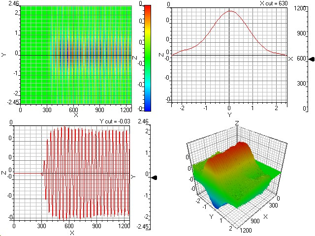

About
What each stage does (short + practical)
Pre-analysis → Advanced layer
The image below is a heat signature view from the biosensor pre-analysis stage. It’s used
as a fast screening signal before running slower / costlier tests.
Stage 1
Signal acquisition
Capture raw sensor output (optical/electrical). Store a timestamped frame or reading batch.
Stage 2
Pre-analysis screening
Quick checks like RI + a derived index (e.g., PPI) to decide if advanced testing should run.
Stage 3
Feature extraction
Convert raw signatures into stable numbers: baseline removal, smoothing, peak/area metrics, and
normalization.
Stage 4
Advanced tests
Pull TDS, pH, Turbidity (and optionally water level) and track trends over time.
Stage 5
Decision & logging
Apply thresholds / rules to output Drinkable or Non‑drinkable. Save readings for audit,
alerts, and calibration improvement.
On the dashboard, “realtime sample” can be pulled from the backend at
/water/report/advanced (and a new row can be generated via /water/generate).
Heat signatures (pre-analysis)
